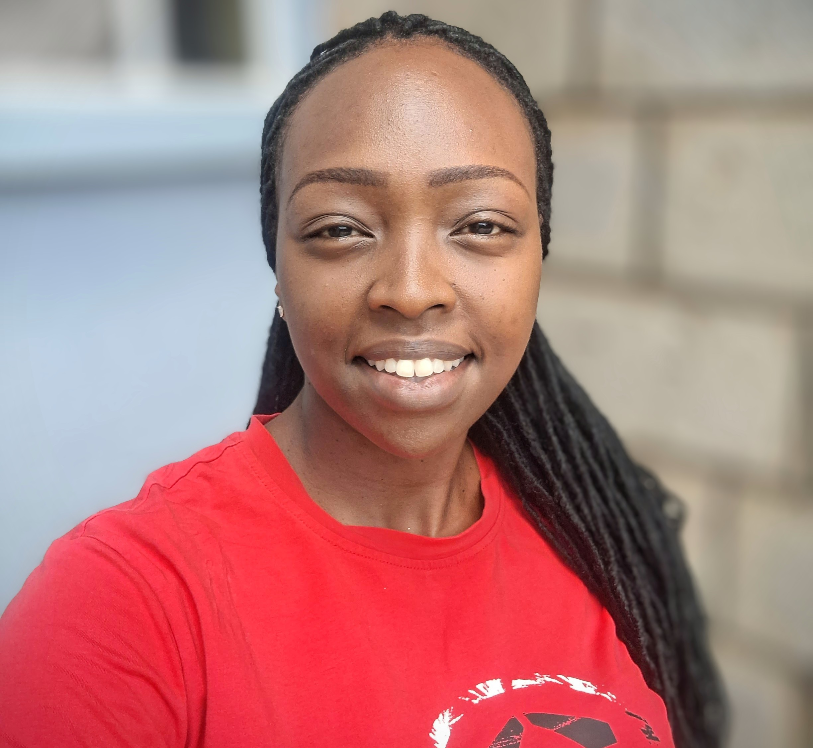

SHARLYNE MUCHUGIA

Summary
Passionate and dedicated web developer specializing in creating dynamic, responsive websites with a focus on seamless user experiences. Proficient in HTML, CSS, and JavaScript, with a growing expertise in full-stack development. Committed to delivering creative and technically sound solutions that meet client needs and user expectations.
Education
- Self-taught web developer with ongoing commitment to learning and skill enhancement.
Work Experience
-
Freelance Web Developer - Self-Employed
Sept 2024 - Present
- Developed Dynamic Websites: Created multiple responsive websites from scratch, focusing on user-friendly interfaces and seamless navigation to enhance user experiences.
- Full-Stack Solutions: Engaged in full-stack development, utilizing HTML, CSS, and JavaScript to build interactive web applications that meet diverse client needs.
- Experimentation with Frameworks: Actively explored various modern web development frameworks and tools (e.g., React, Vue.js) to expand technical proficiency and improve project outcomes.
-
Personal Projects - Various Projects
Sept 2024 - Present
- Portfolio Website: Designed and developed a personal portfolio website showcasing my web development projects, emphasizing responsive design and user engagement.
- Open Source Contributions: Participated in open-source projects by contributing code and collaborating with other developers to enhance functionalities and fix bugs.
-
Learning & Development - Self-Taught Web Developer
Sept 2024 - Present
- Continuous Skill Development: Dedicated countless hours to learning the fundamentals of web development through online courses, tutorials, and hands-on experimentation with coding projects.
- Community Engagement: Engaged with online developer communities to share knowledge, seek feedback, and stay updated on industry trends.
Skills
- HTML, CSS, JavaScript
- Responsive Web Design
- Full-Stack Development
- User Experience (UX) Design
- Problem-Solving
Certification
-
Web Development Bootcamp
Udemy - September 2024
- Completed a comprehensive bootcamp covering HTML, CSS, JavaScript, and responsive web design principles.
Other